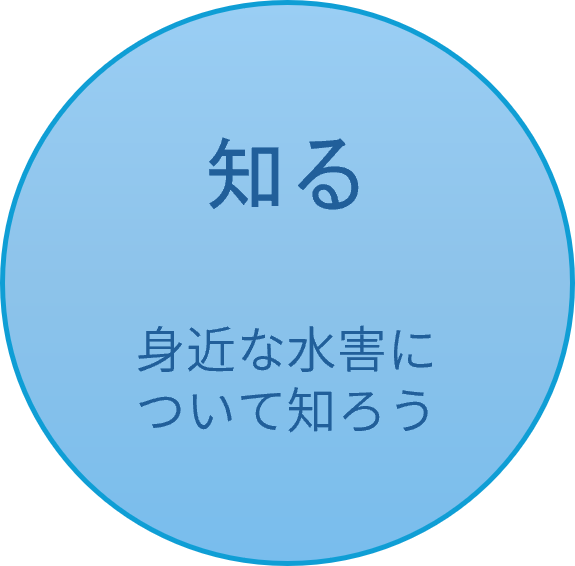
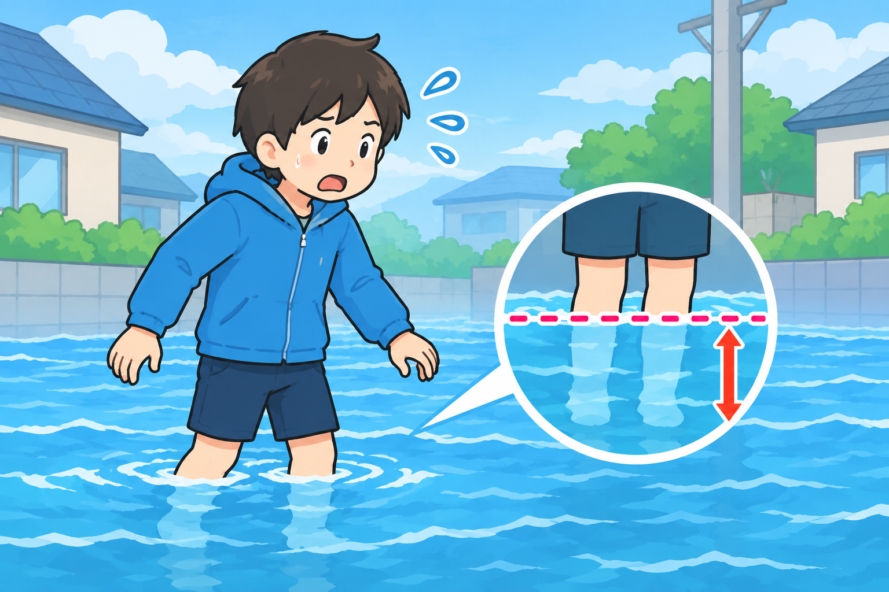

対策のためにも、まずは越谷市と洪水のことを知りましょう。
1. なぜ？越谷市が水害に遭いやすい理由
「川が集まる街」だからこそ、水のリスクも集まる
越谷市は、元荒川、中川、綾瀬川、古利根川など、数多くの川が流れる「水郷のまち」です。しかしその反面、「市内の大部分が平坦な低地」という地形の特徴を持っています。
- 周辺から水が集まる：大雨が降ると、周囲の地域から越谷の川へ一気に水が流れ込みます。
- 水が外へ流れにくい：土地全体の高低差が小さいため、集まった水が自然にハケていきません。
- 「内水氾濫」のリスク：川の氾濫だけでなく、下水道や側溝の処理能力を超えて街中に水があふれる現象が頻発します。
2. 過去の記録：越谷市を襲った主な水害
「まさか」ではなく、実際に起きている現実
越谷市では、過去に何度も大きな水害に見舞われています。
２０２３年（台風2号＋前線）
- 市内全域で道路冠水や床下・床上浸水が多発しました。
- 元荒川や新方川などが氾濫危険水位に達し、多くの避難情報が発令されました。
２０１５年（関東・東北豪雨）
- 市内各地で大規模な浸水被害が発生しました。
- 浸水が数日間にわたって引かない地域もあり、日常の交通や生活が完全に麻痺しました。
3. 全国で起きている「異次元の水害」
近年、地球温暖化などの影響により、全国各地でこれまでの想定を超える「豪雨被害」が相次いでいます。
線状降水帯の発生
同じ場所に猛烈な雨が降り続け、一瞬で街が冠水する現象が全国で頻発しています。
２０２６年８月 千葉豪雨
直近(２０２６年)でも、記録的な豪雨により千葉県で死者10人、住宅被害1,500棟以上に及ぶ大惨事が発生。車内への閉じ込めや、道路冠水による転倒・転落死が相次ぎました
２０１８年 西日本豪雨
近畿や九州地方を中心に死者220人以上、全半壊・浸水家屋は5万棟規模に達する平成最悪の豪雨災害となりました。
4. 水害って、実際どんな状態になるの？
水深わずか20cmでも、人間は歩けなくなる

- 水深20〜30cm（大人のすね程度）： 水圧と濁り（足元が見えない）で、歩行が非常に困難になります。
- 水深50cm（大人の膝上）： 自力での歩行はほぼ不可能。車もエンジンが止まり動かなくなります。
- 見えないトラップ：用水路やマンホールの危険： 冠水した道路では、フタが外れたマンホールや用水路の境目が見えなくなり、転落事故が多発します。
- ライフラインの停止：電気・水道の停止： 床上浸水するとパワーユニットや室外機が壊れ、停電・断水が発生して避難所に行かざるを得なくなります。